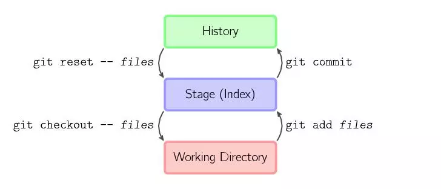
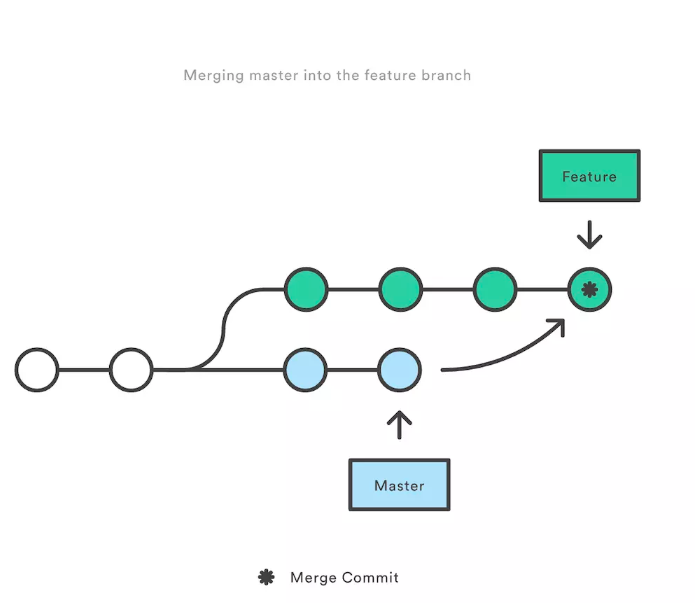
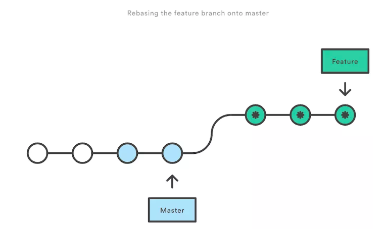

git 常用命令与 gitflow 工作流
前言
本人平时学习及收集内容，欢迎参入一起讨论。
内容
一、分支模型
用 git flow 初始化工程目录完成后，只能看到两个分支（长期分支）：
- master 分支：用于上线的分支，保护性分支，只包含经过测试的稳定代码，开发人员不能直接工作在此分支上，也不能直接提交改动到 master 分支上。
- develop 分支：是开发人员进行任何新的开发的基础分支，当开始一个新的 feature 分支的时候，要从 develop 分出去；另外此分支也汇集所有的已完成的功能，等待合并到 master 分支上线。上面两个分支被称为 长期分支 ，存在于项目的整个生命周期中，其他分支，是临时性的，根据需要来创建，当完成了自己的任务后，就会被删掉。
- feature 分支：平常的开发工作使用最频繁的分支。
创建功能分支，如下命令会创建一个名为”feature/” 的功能分支，该分支默认从 develop 检出，在做功能性开发的时候，检出一个独立的分支，是版本控制中一个重要 的原则。
git flow feature start <branch-name>
完成功能分支：
git flow feature finish <branch-name>
该命令会把我们在当前分支的代码整合到‘develop’分支中去，之后，git-flow 会进行清理操作，删除当下完成的功能分支，将分支切换到‘develop’。
- release 分支：发布分支
创建 release 分支命令如下：
git flow release start 1.1.5
当你认为现在的‘develop’分支的代码已经是一个成熟的 release 版本的时候，这意味着，首先它包括所有新功能和必要的修复；其二，它已经被彻底的测试过了。如果上述两点都满足，那就是时候创建 release 分支了。 note：release 分支是使用版本号命名的，这个命名方案会让 Git-flow 在我们完成 release 后，适当的自动去标记那些 release 提交。
完成 release 分支：
git flow release finish 1.1.5
上述命令会完成如下一系列操作：
git-flow会拉取远程仓库，确保目前是最新的版本。release内容会被合并到 master 和 develop 两个长期分支中去。这样不仅产品代码是最新的，新开的功能分支也将基于最新的代码。
为了便于识别和做历史参考，release 提交会被标记上这个release的名字清理操作，版本分支会被删除，并且回到 develop 分支。
note： 从 Git 的角度看来，release 版本现在已经完成，依据设置，对 master 的提交可能已经触发了编译部署流程。或者手动部署。
- hotfix 分支：很多时候，当对 release 版本做全面测试的时候，可能就会发现一些小错误，在这种情况下，git-flow 会提供一个特定的 hotfix 工作流程。
创建 hotfix 分支:
git flow hotfix start bug-fixed
上述命令会创建一个名为：hotfix/bug-fixed 的分支，这是对产品代码的修复，所以hotfix分支是基于master分支检出的。
这也是和release分支最明显的区别，release分支是基于develop分支检出的。因为不能再一个还不完全稳定的分支上对产品代码进行修复。
就像release一样，修复这个错误，会直接影响到项目的版本号。
完成 hotfix 分支：
git flow hotfix finish bug-fixed
上述命令类似于发布一个release版本：
- 完成的改动会被合并到
master中，同样也会合并到develop分支中，这样就可以确保这个错误不会再次出现在下一个release中； - 这个
hotfix将会被标记起来以便于参考； - 当前的
hotfix分支将会被删除，然后切换到develop分支；
note： 完成
hotfix分支之后，自动或手动启动编译部署流程
下图为整体流程图：

主要分支
- master: 永远处在即将发布(production-ready)状态
- develop: 最新的开发状态
辅助分支
feature: 开发新功能的分支, 基于 develop, 完成后 merge 回 developrelease: 准备要发布版本的分支, 用来修复 bug. 基于 develop, 完成后 merge 回 develop 和 masterhotfix: 修复 master 上的问题, 等不及 release 版本就必须马上上线. 基于 master, 完成后 merge 回 master 和 develop
总结
主要分支
- master: 永远处在即将发布(production-ready)状态
- develop: 最新的开发状态
辅助分支
- feature: 开发新功能的分支, 基于 develop, 完成后 merge 回 develop
- release: 准备要发布版本的分支, 用来修复 bug. 基于 develop, 完成后 merge 回 develop 和 master
- hotfix: 修复 master 上的问题, 等不及 release 版本就必须马上上线. 基于 master, 完成后 merge 回 master 和 develop
二、Git 常用命令清单
git 整体流程图：

- 初始化仓库
- 配置 Git
- 增加删除文件
- 代码提交
- 分支命令
- 标签命令
- 查看信息
- 远程同步
- 撤销
初始化仓库
# 在当前目录新建一个Git代码库
$ git init
# 新建一个目录，将其初始化为Git代码库
$ git init [project-name]
# 下载一个项目和它的整个代码历史
$ git clone [url]
2
3
4
5
6
7
8
配置 Git
Git 的设置文件为 .gitconfig，它可以在用户主目录下（全局配置），也可以在项目目录下（项目配置）。
# 显示当前的Git配置
$ git config --list
# 编辑Git配置文件
$ git config -e [--global]
# 设置提交代码时的用户信息
$ git config [--global] user.name "[name]"
$ git config [--global] user.email "[email address]"
2
3
4
5
6
7
8
9
增加删除文件
# 添加指定文件到暂存区
$ git add [file1] [file2] ...
# 添加指定目录到暂存区，包括子目录
$ git add [dir]
# 添加当前目录的所有文件到暂存区
$ git add .
# 添加每个变化前，都会要求确认
# 对于同一个文件的多处变化，可以实现分次提交
$ git add -p
# 删除工作区文件，并且将这次删除放入暂存区
$ git rm [file1] [file2] ...
# 停止追踪指定文件，但该文件会保留在工作区
$ git rm --cached [file]
# 改名文件，并且将这个改名放入暂存区
$ git mv [file-original] [file-renamed]
2
3
4
5
6
7
8
9
10
11
12
13
14
15
16
17
18
19
20
21
代码提交
# 提交暂存区到仓库区
$ git commit -m [message]
# 提交暂存区的指定文件到仓库区
$ git commit [file1] [file2] ... -m [message]
# 提交工作区自上次commit之后的变化，直接到仓库区
$ git commit -a
# 提交时显示所有diff信息
$ git commit -v
# 使用一次新的commit，替代上一次提交
# 如果代码没有任何新变化，则用来改写上一次commit的提交信息
$ git commit --amend -m [message]
# 重做上一次commit，并包括指定文件的新变化
$ git commit --amend [file1] [file2] ...
2
3
4
5
6
7
8
9
10
11
12
13
14
15
16
17
18
分支命令
# 列出所有本地分支
$ git branch
# 列出所有远程分支
$ git branch -r
# 列出所有本地分支和远程分支
$ git branch -a
# 新建一个分支，但依然停留在当前分支
$ git branch [branch-name]
# 新建一个分支，并切换到该分支
$ git checkout -b [branch]
# 新建一个分支，指向指定commit
$ git branch [branch] [commit]
# 新建一个分支，与指定的远程分支建立追踪关系
$ git branch --track [branch] [remote-branch]
# 切换到指定分支，并更新工作区
$ git checkout [branch-name]
# 切换到上一个分支
$ git checkout -
# 建立追踪关系，在现有分支与指定的远程分支之间
$ git branch --set-upstream [branch] [remote-branch]
# 合并指定分支到当前分支
$ git merge [branch]
# 选择一个commit，合并进当前分支
$ git cherry-pick [commit]
# 删除分支
$ git branch -d [branch-name]
# 删除远程分支
$ git push origin --delete [branch-name]
$ git branch -dr [remote/branch]
2
3
4
5
6
7
8
9
10
11
12
13
14
15
16
17
18
19
20
21
22
23
24
25
26
27
28
29
30
31
32
33
34
35
36
37
38
39
40
41
42
标签命令
# 列出所有tag
$ git tag
# 新建一个tag在当前commit
$ git tag [tag]
# 新建一个tag在指定commit
$ git tag [tag] [commit]
# 删除本地tag
$ git tag -d [tag]
# 删除远程tag
$ git push origin :refs/tags/[tagName]
# 查看tag信息
$ git show [tag]
# 提交指定tag
$ git push [remote] [tag]
# 提交所有tag
$ git push [remote] --tags
# 新建一个分支，指向某个tag
$ git checkout -b [branch] [tag]
2
3
4
5
6
7
8
9
10
11
12
13
14
15
16
17
18
19
20
21
22
23
24
25
26
查看信息
# 显示有变更的文件
$ git status
# 显示当前分支的版本历史
$ git log
# 显示commit历史，以及每次commit发生变更的文件
$ git log --stat
# 搜索提交历史，根据关键词
$ git log -S [keyword]
# 显示某个commit之后的所有变动，每个commit占据一行
$ git log [tag] HEAD --pretty=format:%s
# 显示某个commit之后的所有变动，其"提交说明"必须符合搜索条件
$ git log [tag] HEAD --grep feature
# 显示某个文件的版本历史，包括文件改名
$ git log --follow [file]
$ git whatchanged [file]
# 显示指定文件相关的每一次diff
$ git log -p [file]
# 显示过去5次提交
$ git log -5 --pretty --oneline
# 显示所有提交过的用户，按提交次数排序
$ git shortlog -sn
# 显示指定文件是什么人在什么时间修改过
$ git blame [file]
# 显示暂存区和工作区的差异
$ git diff
# 显示暂存区和上一个commit的差异
$ git diff --cached [file]
# 显示工作区与当前分支最新commit之间的差异
$ git diff HEAD
# 显示两次提交之间的差异
$ git diff [first-branch]...[second-branch]
# 显示今天你写了多少行代码
$ git diff --shortstat "@{0 day ago}"
# 显示某次提交的元数据和内容变化
$ git show [commit]
# 显示某次提交发生变化的文件
$ git show --name-only [commit]
# 显示某次提交时，某个文件的内容
$ git show [commit]:[filename]
# 显示当前分支的最近几次提交
$ git reflog
2
3
4
5
6
7
8
9
10
11
12
13
14
15
16
17
18
19
20
21
22
23
24
25
26
27
28
29
30
31
32
33
34
35
36
37
38
39
40
41
42
43
44
45
46
47
48
49
50
51
52
53
54
55
56
57
58
59
60
远程同步
# 下载远程仓库的所有变动
$ git fetch [remote]
# 显示所有远程仓库
$ git remote -v
# 显示某个远程仓库的信息
$ git remote show [remote]
# 增加一个新的远程仓库，并命名
$ git remote add [shortname] [url]
# 取回远程仓库的变化，并与本地分支合并
$ git pull [remote] [branch]
# 上传本地指定分支到远程仓库
$ git push [remote] [branch]
# 强行推送当前分支到远程仓库，即使有冲突
$ git push [remote] --force
# 推送所有分支到远程仓库
$ git push [remote] --all
2
3
4
5
6
7
8
9
10
11
12
13
14
15
16
17
18
19
20
21
22
23
撤销
# 恢复暂存区的指定文件到工作区
$ git checkout [file]
# 恢复某个commit的指定文件到暂存区和工作区
$ git checkout [commit] [file]
# 恢复暂存区的所有文件到工作区
$ git checkout .
# 重置暂存区的指定文件，与上一次commit保持一致，但工作区不变
$ git reset [file]
# 重置暂存区与工作区，与上一次commit保持一致
$ git reset --hard
# 重置当前分支的指针为指定commit，同时重置暂存区，但工作区不变
$ git reset [commit]
# 重置当前分支的HEAD为指定commit，同时重置暂存区和工作区，与指定commit一致
$ git reset --hard [commit]
# 重置当前HEAD为指定commit，但保持暂存区和工作区不变
$ git reset --keep [commit]
# 新建一个commit，用来撤销指定commit
# 后者的所有变化都将被前者抵消，并且应用到当前分支
$ git revert [commit]
# 暂时将未提交的变化移除，稍后再移入
$ git stash
$ git stash pop
2
3
4
5
6
7
8
9
10
11
12
13
14
15
16
17
18
19
20
21
22
23
24
25
26
27
28
29
30
31
git reset、git revert 和 git checkout 有什么区别
这个问题同样也需要先了解 git 仓库的三个组成部分：工作区（Working Directory）、暂存区（Stage）和历史记录区（History）。
- 工作区：在 git 管理下的正常目录都算是工作区，我们平时的编辑工作都是在工作区完成
- 暂存区：临时区域。里面存放将要提交文件的快照
- 历史记录区：git commit 后记录区
三个区的转换关系以及转换所使用的命令：

git reset、git revert 和 git checkout的共同点：用来撤销代码仓库中的某些更改。
不同点：
- 从
commit层面来说：git reset可以将一个分支的末端指向之前的一个commit。然后再下次git执行垃圾回收的时候，会把这个commit之后的commit都扔掉。git reset还支持三种标记，用来标记reset指令影响的范围：--mixed：会影响到暂存区和历史记录区。也是默认选项--soft：只影响历史记录区--hard：影响工作区、暂存区和历史记录区注意：因为 git reset 是删除 commit 记录，从而会影响到其他开发人员的分支，所以不要在公共分支（比如 develop）做这个操作。
gitcheckout：可以 HEAD 移到一个新的分支，并更新工作目录。因为可能会覆盖本地的修改，所以执行这个指令之前，你需要 stash 或者 commit 暂存区和工作区的更改。git revert和git reset的目的是一样的，但是做法不同，它会以创建新的 commit 的方式来撤销 commit，这样能保留之前的 commit 历史，比较安全。另外，同样因为可能会覆盖本地的修改，所以执行这个指令之前，你需要 stash 或者 commit 暂存区和工作区的更改。
- 从文件层面来说：
git reset只是把文件从历史记录区拿到暂存区，不影响工作区的内容，而且不支持--mixed、--soft和--hard。git checkout则是把文件从历史记录拿到工作，不影响暂存区的内容。git revert不支持文件层面的操作。
rebase 与 merge的区别?
git rebase和git merge一样都是用于从一个分支获取并且合并到当前分支。
假设一个场景，就是我们开发的[feature/todo]分支要合并到master主分支，那么用rebase或者merge有什么不同呢？

- merge特点：自动创建创建一个新的commit如果合并的时候遇到冲突，仅需要修改后重新commit
- 优点：记录了真实的commit情况，包括每个分支的详情
- 缺点：因为每次merge会自动产生一个
merge commit，所以在使用git的GUI tools，特别是commit比较频繁时，看到分支很杂乱。

- rebase特点：会合并之前的commit历史
- 优点：得到更简洁的项目历史，去掉了merge commit
- 缺点：如果合并出现代码问题不容易定位，因为re-write了history
因此，当需要保留详细的合并信息的时候建议使用git merge，特别是需要将分支合并进入master分支时；当发现自己修改某个功能时，频繁进行了git commit提交时，发现其实过多的提交信息没必要时，可以尝试git rebase。
三、Git 常用命令导图

参考资料
- git 常用命令收集与 git-flow 简介
- Gitflow 工作流
- git-flow 的工作流程
- Git 工作流
- git 学习
- Git 工作流指南
- git 常用命令
- Git 的奇技淫巧
- 高质量的 Git 中文教程
- Git Community Book 中文版
- GitHub 漫游指南
联系作者
平凡世界，贵在坚持。